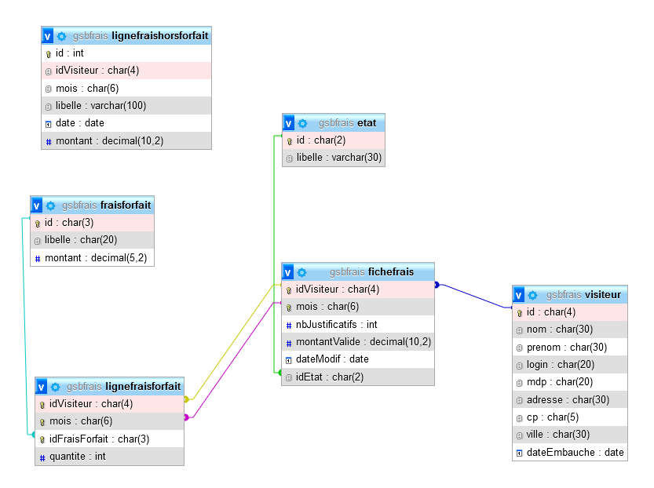
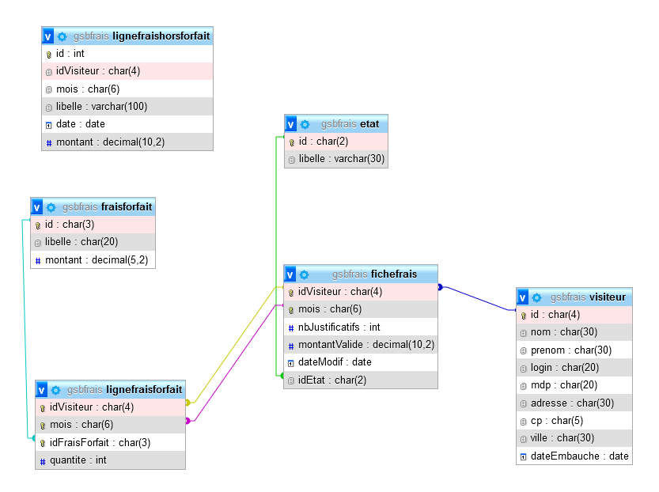
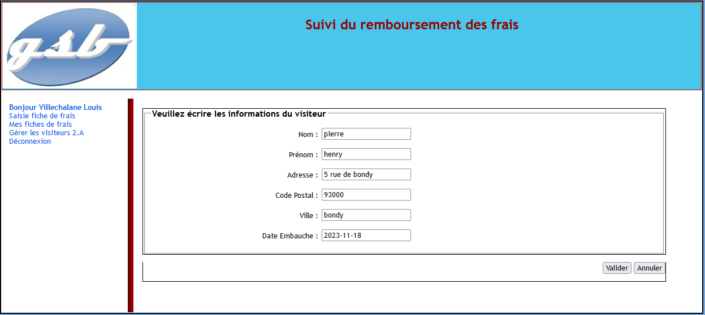
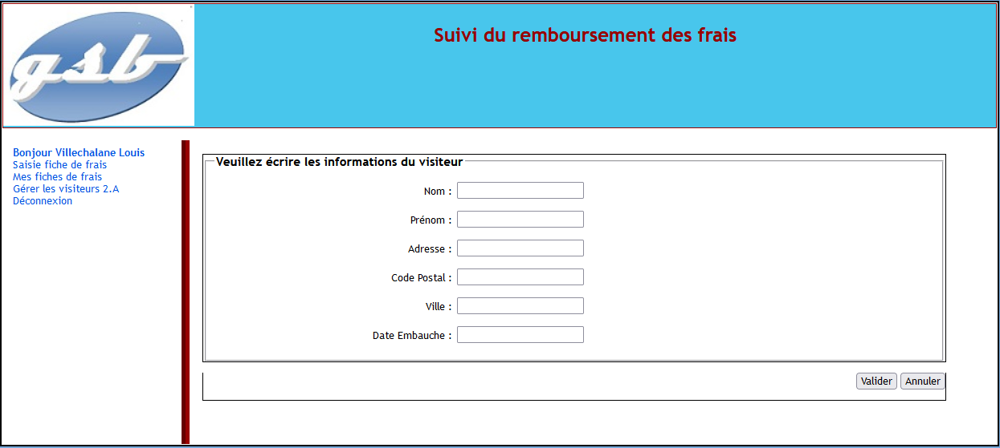
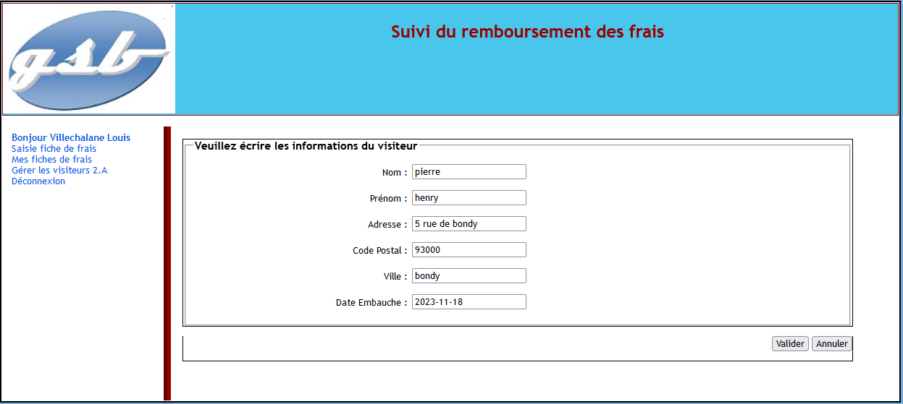
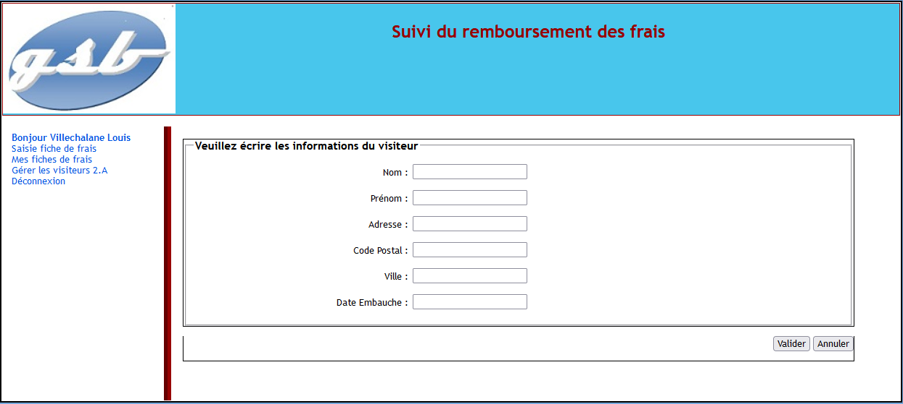
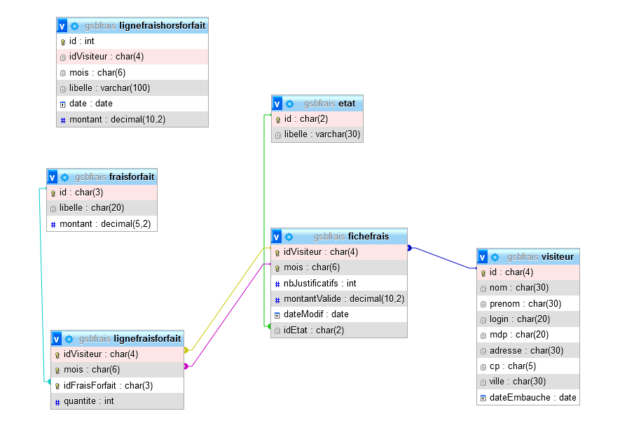
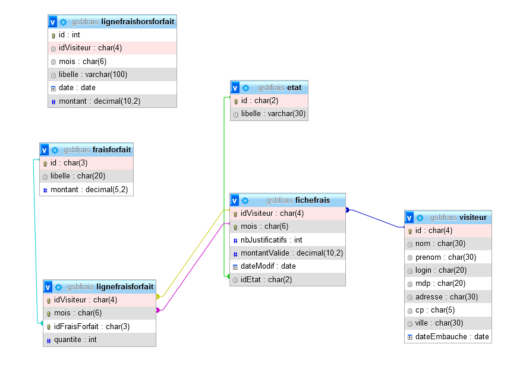

Ma Veille Technologique
Qu'est-ce que la veille technologique ?
La veille technologique est un processus continu de surveillance, de collecte, d'analyse et de diffusion d'informations sur les évolutions,
les tendances et les avancées dans le domaine technologique. Elle vise à rester informé des dernières innovations, des nouveaux produits,
des découvertes scientifiques et des tendances émergentes qui pourraient avoir un impact sur une organisation, une industrie ou un domaine spécifique.
Sujet de ma veille technologique : Le Web3
Qu'est-ce c'est le Web3 ?
D'abord, faisons un petit détour dans le passé.
Le Web a eu pour le moment, deux version. Une première version, le Web 1.0 était principalement statique. Les utilisateurs pouvaient consulter des informations,
mais il y avait peu d'interactivité. Les sites web étaient généralement des pages simples avec du texte et des images.
Le Web 2.0 (la version actuelle), a introduit une interactivité accrue. Les utilisateurs pouvaient contribuer du contenu, commenter, partager et interagir avec
d'autres utilisateurs en ligne. Cela a donné naissance à des plateformes de médias sociaux, des blogs, des wikis, des services de partage de vidéos, etc.
Et maintenant, la version qui nous intéresse ici, le Web 3.0, plus communément appelé le "Web3", est actuellement en développement. Cette version est pensé pour avoir
une vision d'Internet où les utilisateurs ont un contrôle accru sur leurs données et leurs interactions en ligne. Il repose sur des technologies telles que la blockchain,
les contrats intelligents et les réseaux décentralisés pour offrir un Internet plus transparent, sécurisé et résistant à la censure. Ce concept vise à réduire la dépendance
envers les grandes plateformes centralisées et à donner plus de pouvoir aux utilisateurs.
Pour faire cette veille technologique, j'ai utilisé un agrégateur de flux RSS en ligne "Feedly" et j'ai également consulté l'actualité à propos de
ce thème via des sites tels que "Crytoast", "JournalDuCoin", BFM Bussiness.
Voici les articles que j'ai trouvé pertinents durant ma veille :
BEOBLE - La messagerie sans compromis sur la sécurité sur la vie privée ?
Beoble est une messagerie web3 offrant une sécurité et une expérience utilisateur de qualité, avec des fonctionnalités
avancées comme l'envoi de médias et la création de groupes spécifiques. Le jeton $BBL sera lancé sur Kucoin, soutenu
par des partenaires comme Samsung, visant à devenir une référence dans l'écosystème crypto.
Chainlink s'associe à l’une des plus grandes compagnies de télécommunications au monde pour protéger les utilisateurs du Web3"
Chainlink s'associe à Telefónica, un géant des télécommunications, pour intégrer le réseau d'oracles Chainlink à l'initiative
GSMA Open Gateway, renforçant ainsi la sécurité du Web3. Cette collaboration vise à protéger les utilisateurs contre le piratage
par échange de carte SIM, une méthode de plus en plus utilisée pour accéder aux comptes bancaires ou aux portefeuilles de c
ryptomonnaies. Ces efforts devraient stimuler l'intérêt pour Chainlink, dont le cours a déjà enregistré une forte hausse en 2023,
passant de 5 à 20 dollars.
Le Web 3 est une solution au marketing post-cookies, à la certification des contenus, à la lutte contre les fake news
Fabien Aufrechter de Vivendi met en avant le rôle du Web 3 dans la transition post-cookies, la certification des contenus et la
lutte contre les fake news. Il souligne que les NFTs peuvent remplacer les cookies tiers, notamment pour accéder à du contenu de
manière éthique et transparente. Le projet de token gating de Capital illustre cette évolution en permettant aux détenteurs de NFTs
d'accéder à du contenu exclusif. Aufrechter évoque également l'émergence du CRM 3.0 pour l'engagement client et considère l'IA générative
comme un outil prometteur, à condition d'être utilisée dans un contexte de confiance et de certification de contenu.


 


 



 
